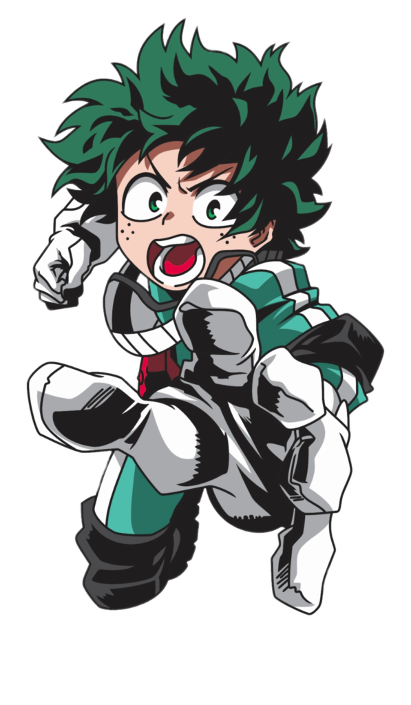

Historia My Hero Academia
Em um mundo onde (quase) todas as pessoas possuem superpoderes, o tímido estudante Midoriya Izuku teve a infelicidade de nascer sem nenhum dom especial. Grande fã do sorridente All Might, o herói máximo desse mundo, Deku, como é chamado pelos colegas, sofre com a frustração de saber que jamais terá uma individualidade especial para que possa se tornar, assim como seu grande ídolo, em um defensor dos fracos e oprimidos.
Mesmo achincalhado por seus amigos de escola, como o arrogante Katsuki, o garoto nunca abandonou o herói existente dentro de si. Gentil e generoso, ele está sempre pronto a ajudar quem precisa.
Porém, um inesperado encontro irá mudar o destino de Deku. Destino esse que o levará a ingressar no tão sonhado colégio U.A., instituição para onde todos os futuros grandes heróis vão estudar e treinar. A partir daí, as cortinas de uma fantástica aventura repleta de personagens cativantes e temerosos vilões se abrem para o jovem Midoriya!!
Trailer Primeira Temporada